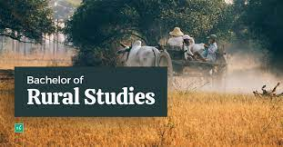

BRS(Bachelor in Rural Studies)

BRS (Bachelor of Rural Studies) is a three-year degree course. It comes under the stream of humanities and social science. The objective of the course is to prepare the graduates to work for the development of rural areas, to make them understand the issues affecting the rural economy and work towards the betterment of the situation, through awareness, community mobilization, and policy implementation.
The course was introduced to the Indian academy keeping in view the rural economy’s contribution to the overall Indian economy.
The degree covers topics like the rural economy, statistics, cooperation, panchayat, animal husbandry, agriculture, horticulture, research work, political science, and entrepreneurship.
Eligiblity
Candidates must have passed class 12 from the recognized board with a minimum of 45% to get into the courses of BRS.
This Courses is mainly taken up the Students of Arts Stream.
Subject you will be learning
- Rural Development
-
Agriculture and Horticulture
-
Animal Husbandry
-
Rural Industry
- Common property resource management & livelihood
- Rural energy
- Rural health, hygiene, sanitation & yoga
- Human resource development & management
- Organizational behavior and organizational development
- NGOs management
Expected Salary
As freshers or at the entry-level the average salary package offered varies from 2 to 3 LPA. People with a decent number of years of experience can earn up to a salary package of 6 to 10 LPA.
Jobs Opportuinites
- Establish own NGO
- Project Coordinator
- Business Development Manager
- Marketing & Sales Manager
Higher Studies
There is a good scope of higher studies after the BRS degree. Master of Rural Studies (MRS), Master of Business Administration (MBA), Master of Social Welfare (MSW) can be pursued after BRS.